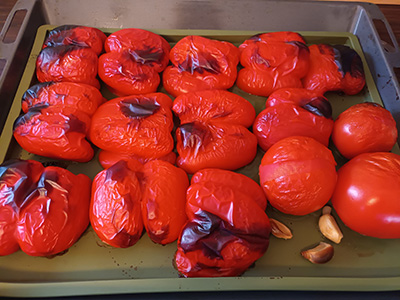
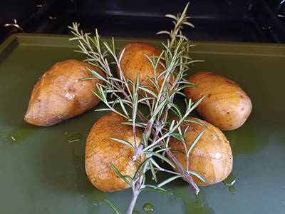

Den Ofen zunächst auf 230 Grad vorheizen. Die Paprika halbieren und mit der Hautseite nach oben auf ein mit Backpapier belegtes Backblech legen. Die Tomaten und die geschälte Knoblauchzehe ebenfalls auf das Backblech geben. Im vorgeheizten Ofen ca. 15 Minuten rösten, bis die Paprika außen schwarz wird. Herausnehmen und auskühlen lassen.
Die verbrannte Haut der Paprika mit den Fingern ablösen. Das Fruchtfleisch mit den Tomaten, der Knoblauchzehe, den Mandeln, dem Paprikapulver, Olivenöl, Tomatenmark und Weißweinessig im Mixer oder mit dem Pürierstab zu einer Sauce mixen. Mit Salz und Pfeffer abschmecken und beiseite stellen.
Die Kartoffeln waschen, halbieren und mit einem scharfen Messer rautenförmig einscheiden (achtung, nicht durchscheiden). Mit dem Olivenöl bestreichen und jeweil etwas Rosmarin darauf legen. Im Ofen ca. 30 Minuten knuprig garen. Herausnehmen, den Rosmarin entfernen und mit der Romesco-Sauce genießen. Wer mag, streut noch etwas frische Kresse darüber.
Bilder Sammlung und Servierempfehlungen
Bild aus Schritt 1

Bild aus Schritt 3

Die Kartoffeln sind auch sehr lecker mit Lachs oder Ei: